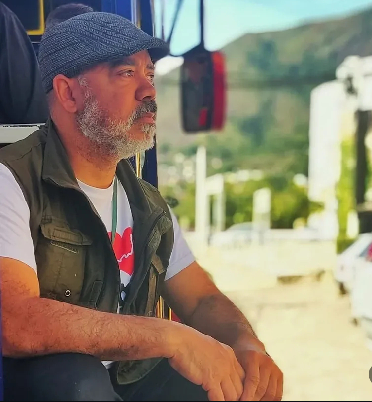
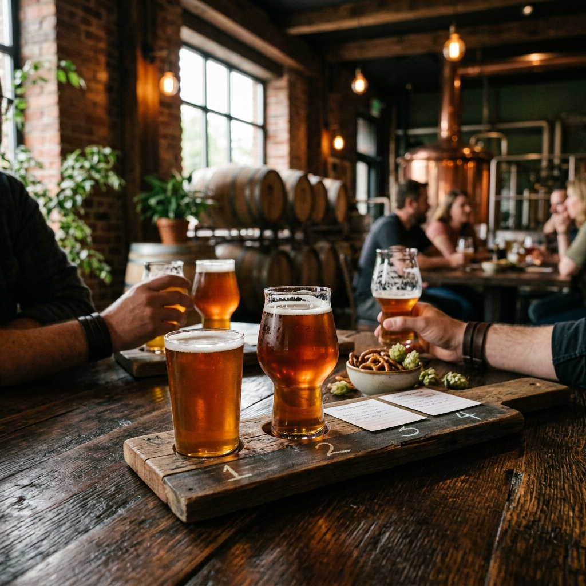
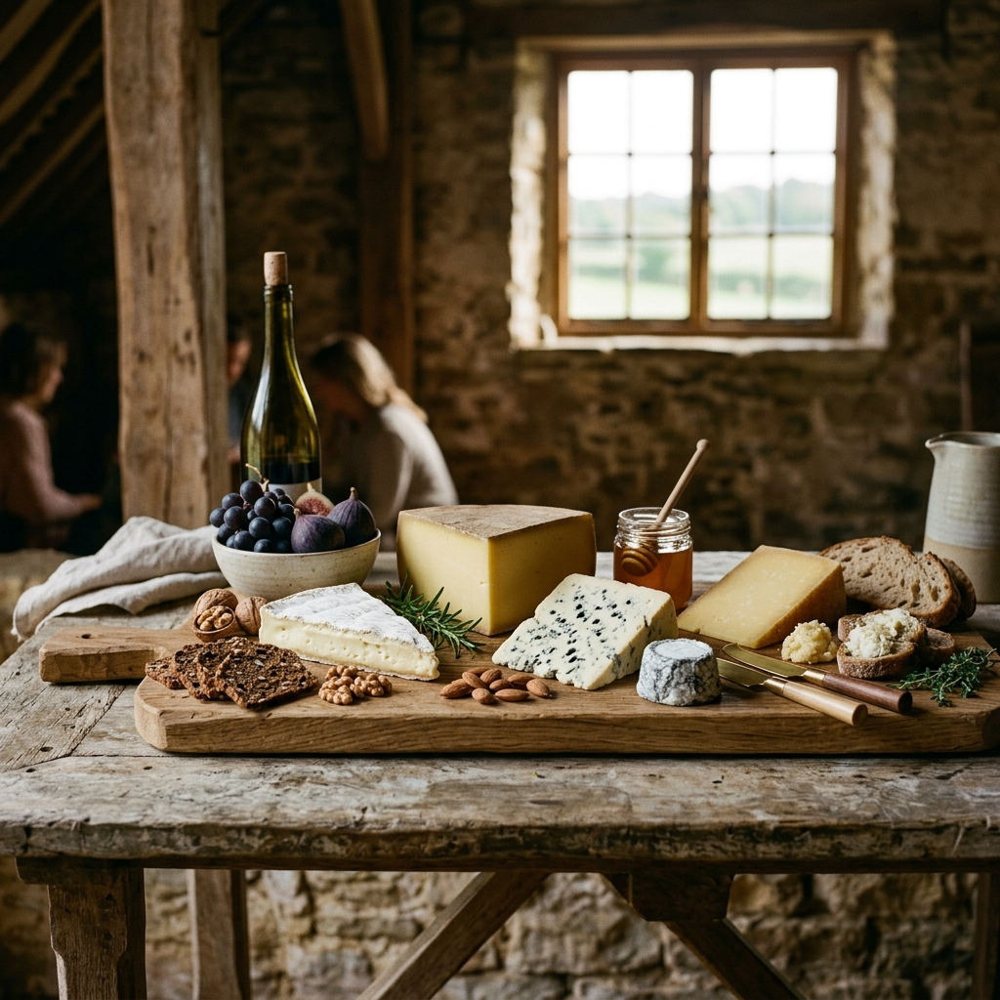
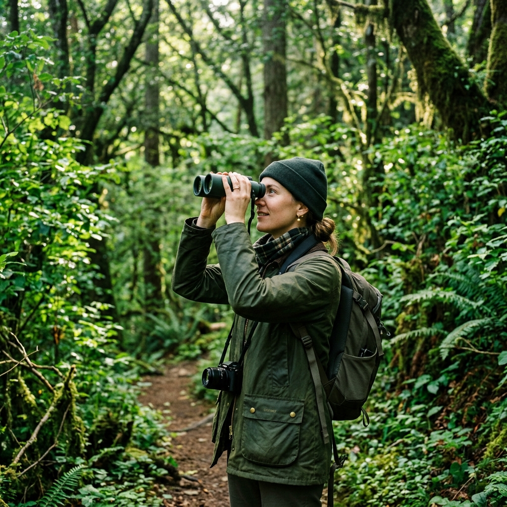

Rota Cervejeira
Visita às melhores cervejarias artesanais da região, com degustação guiada e imersão na cultura cervejeira local.
Explore a Cultura e a Natureza com a alma de quem vive nela. Conheça os melhores passeios guiados na Serra dos Órgãos. Roteiros gastronômicos, cervejarias artesanais, turismo cultural e vivências rurais autênticas. Descubra o que fazer em Teresópolis e venha criar memórias inesquecíveis.

Olá! Eu sou o Henrique. Sou apaixonado pelas raízes, sabores e histórias de Teresópolis, Brasil. Meu propósito é te levar para uma imersão completa no turismo histórico, ecológico e gastronômico da nossa região.
Meu foco não é apenas te guiar em um trajeto, mas proporcionar experiências autênticas, visitas a fazendas históricas e conexão com a cultura de Teresópolis, aos pés do majestoso Dedo de Deus. Adapto cada passeio guiado para que seja inesquecível e focado no seu interesse.
Atendemos em toda a região com flexibilidade total para tornar seu dia perfeito.
Visita às melhores cervejarias artesanais da região, com degustação guiada e imersão na cultura cervejeira local.
Conheça fazendas produtoras de queijos artesanais premiados, entenda o processo de cura e saboreie produtos únicos.
Roteiros educativos nacionais e internacionais voltados para estudantes e grupos, com foco em história e práticas sustentáveis.
Uma imersão na vida do campo, com visitas a antigas fazendas, colheitas e um mergulho nas tradições do interior.
Caminhadas silenciosas pelas matas nativas para avistar e fotografar a rica biodiversidade de pássaros da nossa região.
Atendimento genuíno e energia contagiante. Comigo, todo passeio é uma festa.
Acesso aos segredos e cantinhos que apenas os moradores de verdade conhecem.
Andamos no seu ritmo. Adaptamos as rotas de acordo com a sua experiência e disposição.
Guia credenciado pelo Cadastur. Segurança em primeiro lugar sempre.



Não! Minha base é em Teresópolis, mas atendo em toda a Região Serrana (Nova Friburgo, Petrópolis, Guapimirim, etc). Basta combinarmos a logística.
De forma alguma! A observação de aves é para todas as idades e níveis. Eu ensino como usar equipamentos básicos e como identificar as espécies.
Apenas roupas confortáveis, tênis apropriado e proteção solar. O que for específico da trilha (como itens de segurança), eu providencio.
Pronto para viver uma aventura inesquecível na Região Serrana? Entre em contato diretamente pelo WhatsApp ou Instagram e vamos montar o seu roteiro perfeito!